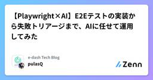
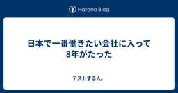
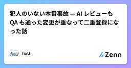

直近1週間の更新
10/3 (土)

AIに作らせたiPhoneアプリを受け入れテスト8項目で判定したら、基準の外が抜けていた  Zennの「Test」のフィード
Zennの「Test」のフィード
この記事で分かることAI に iPhone アプリを作らせるとき、合否の基準を仕様書に数字で書いておき、判定は自分でする進め方開発用の環境（Expo Go）で合格したあと、配布版で何を確かめ直したか受け入れテストに全部合格したのに、基準に書かなかった仕様が抜けていた話 前提作ったのは「会議コストタイマー」という iPhone アプリです。人数・時給・予算を入れて開始すると、会議の累計コストが1秒ごとに増えていき、予算の 50%・80%・100% に達したところで段階的に知らせます。2026年9月に App Store で公開しました。開発機は Windows で、...
1時間前
10/2 (金)

本のタイトルから巻数を取り出す正規表現を、表記ゆれのテストで固める Zennの「Test」のフィード
蔵書管理アプリ「本棚（hondana）」では、漫画のシリーズごとに「持っていない巻」を表示しています。1巻から手持ちの最大の巻までを並べ、欠けている番号を拾うだけの処理です。List<int> missingVolumes(String seriesName) { final volumes = (_currentShelfBooks .where((b) => b.seriesName == seriesName && b.volume != null) .map((b) => b.volume!)...
1日前

テストが全部通るのに、本物のデータを1件も読めなかった Zennの「Test」のフィード
GitHub の Issue を読んで、対象範囲が重なっている組を報告するツールを作りました。テストは fixtures を8本用意して、全部通っていました。ルールは6つあって、全部が期待どおりに出ます。本物のリポジトリに掛けたら、Issue を1件も読めていませんでした。 何が起きたか出力はこうでした。11件すべてが同じ指摘です。error #21 対象範囲の節はありますが、パスが1つも書かれていません。error #19 対象範囲の節はありますが、パスが1つも書かれていません。error #16 対象範囲の節はありますが、パスが1つも書かれていません。......
1日前

画像処理パイプラインのリグレッションテストを、サンプル画像セットで作る Zennの「Test」のフィード
OCRや画像認識のパイプラインは、前処理のしきい値を1つ変えただけで、別の画像の結果が静かに変わります。コードのテストは通っているのに、読み取り結果だけが少し悪くなる。この記事は、それを検出するためのリグレッションテストを、小さなサンプル画像セットで組む方法の記録です。扱うのは3つです。サンプル画像セットの作り方、期待値の固定のしかた、そして閾値付きの比較です。コードはこの記事のために新しく書いたもので、実際の案件のコードではありません。手元で実行した結果をそのまま載せています。環境: Python 3.14.6、Pillow 12.3.0、標準ライブラリの unittest。mac...
2日前
10/1 (木)

LLMの答えを機械で検算する — 「間違って書くより、書かない」を3か所で実装した話 Zennの「Test」のフィード
TOEIC学習アプリに、Claude の Vision と構文解析を3つ入れた。解説ページの写真から、正解（A/B/C/D）を自動で入れる巻末スクリプトの写真から、英文を取り込む一文をSVOCに割って、第何文型か出すどれも「写真やテキストを投げたら、それらしい答えが返ってくる」ところまでは、プロンプトを書けば30分で動く。問題はそのあとだった。この3つには共通の性質がある。答えが間違っていても、画面上は正常に見える。正解が1問ズレていても、画面には「A」と出るだけ。解いて不正解になって初めて気づく英文に和訳が混ざっていても、英文らしきものは表示されるSVOCの区切...
2日前

祝日計算のテストは「内閣府 CSV の全 1,067 行と一致すること」の 1 本でいい Zennの「Test」のフィード
株式会社FUNBREW 代表の金井です。事務作業の小さな道具をまとめた無料サイト jimuya（じむや） を自分で作っています。事務の仕事では、「この日から 5 営業日後はいつか」「令和 8 年は西暦何年か」「振込名義の半角カナはどう書くか」といったルールを、何度も検索して確かめます。ところが検索の上位には広告の多い古いサイトが並び、ルールごとに別のサイトを渡り歩くことになります。そこで、こうしたルールを広告なし・登録なしで一か所にまとめたのが jimuya です。同じ計算は API（https://jimuya.jp/api/v1）でも呼べます。この記事は、その中の祝日の計...
2日前

LLMのJSON抽出を回帰確認する：未回答と数量誤りを見落とさない採点手順 Zennの「Test」のフィード
注文文からJSONを抽出する処理を変えたとき、JSONとして読めるかだけを確認しても、数量の取り違えは見つかりません。また、回答が返ってきたケースだけを集計すると、未回答が成績から消えてしまいます。この記事では、公開済みの合成データ6件を使い、入力と正解の分離、採点器の検算、未回答と確認解除の読み方を説明します。特定のモデルの性能比較や、実顧客への導入実績を示すものではありません。教材は GitHubの無料6ケース にあります。この記事の対象は japanese-order-eval-sample-v1.1-windows-fix.zip です。展開すると japanese-orde...
2日前

技術で品質とスピードを両立させるQAリードです Zennの「QA」のフィード
はじめにはじめまして、カウシェのテクノロジー部でQAチームのリーダーをしている亀井です。2026年10月から正社員になりました。前職はマネーフォワードです。ISTQB Advanced Level（Test Management）を持っていて、ISTQB Expert Levelシラバスの日本語翻訳も担当しています。カウシェの開発チームは、開発者1人あたり1日約15PRのペースでコードを出すことを目指しています。Zennでは、この開発スピードにQAがどう追いつくか、AIと自動化を前提にした実践記録を書いていきます。この記事はその1本目として、私が何者で、何を考えてQAをやってい...
2日前
技術で品質とスピードを両立させるQAリードです Zennの「Test」のフィード
はじめにはじめまして、カウシェのテクノロジー部でQAチームのリーダーをしている亀井です。2026年10月から正社員になりました。前職はマネーフォワードです。ISTQB Advanced Level（Test Management）を持っていて、ISTQB Expert Levelシラバスの日本語翻訳も担当しています。カウシェの開発チームは、開発者1人あたり1日約15PRのペースでコードを出すことを目指しています。Zennでは、この開発スピードにQAがどう追いつくか、AIと自動化を前提にした実践記録を書いていきます。この記事はその1本目として、私が何者で、何を考えてQAをやってい...
2日前

【Playwright×AI】E2Eテストの実装から失敗トリアージまで、AIに任せて運用してみた Zennの「QA」のフィード
はじめにこんにちは！e-dashでQAエンジニアをしているpulasQです！👋従来からリグレッションテストを自動化することで手動のテストの工数を削減したり、品質を作り込むことで安心してリリースできる状態を作ったりすることが、E2Eテスト自動化の主な目的の例として挙げられてきました。さらに今は、AIがコードを書くのが当たり前になり、開発のスピードは上がり、E2Eテストの重要性について議論されることも増えてきました。自動テストを導入していても、テストを書く・回す・落ちた原因を調べる、をすべて人の手でやっていては、E2Eテスト自動化の推進が遅くなってしまいます。そこで弊社QA(S...
2日前

日本株Botの改善案を1日で197通り試して、全部ダメだった記録 Zennの「Test」のフィード
暗号資産の自動売買Botとは別に、日本株のデイトレードBotも作っています。こちらは実弾ゼロのドライラン(仮想売買)だけです。その日本株Botは、ルールを作るときに見ていた12日では+171,900円、見ていなかった16日では-4,300円でした。そこで改善案を思いつく限り試すことにしました。1日で197通りです。結論を先に書くと、**197通りすべてが、事前に決めた基準を通りませんでした。**この記事はそのダメだった記録と、たくさん試すときに自分をだまさないためにやったことのまとめです。 元の戦略朝、直近5分の上昇率1位の銘柄を選ぶ走り高値(その日の最高値)から3ティッ...
2日前

FX Botの検証は年+8.6%、本番の再現は+0.6%だった ― 決済を「いつ判定するか」だけで成績が消えた Zennの「Test」のフィード
暗号資産の自動売買Botとは別に、FX(外国為替)のBotも作っています。こちらは実弾ゼロのdry_run(仮想売買)だけで、レバレッジは1倍に固定しています。このFX Bot、dry_runの成績があまりにひどいので、原因を調べ直しました。結果、検証が本番と4点ずれていて、本番の動きを再現し直すと戦略の成績がほぼ消えました。 最終的にこのBotは凍結しています。途中で僕は2回、間違った結論を出しかけています。それも含めて記録します。 Botの中身戦略は単純です。毎朝9時に、円建て7ペア(USD/JPY、EUR/JPYなど)のうち「3日前より0.5%以上下がった」ものを買...
2日前

AI駆動テストを身勝手に定義してみた Opus 5.5で /pr-videoコマンドを作ってみた Zennの「Test」のフィード
はじめにPR に動作確認の動画を付けると、レビュアーは手元で動かさなくても挙動を確かめられます。一方で、録画する側の手間は大きくなりがちです。確認項目を洗い出し、画面を操作しながら録画し、ファイルサイズを GitHub の添付上限に収め、どの動画が何の確認かを PR に書く必要があります。この記事では、この一連の作業を Claude Code のスキル（カスタムスラッシュコマンド）にまとめた方法を紹介します。/pr-video 123 と打つと、Claude Code が次の流れを進めます。人がやるのは、確認項目と費用の承認、最初のログイン、最後の動画の添付です。PR の説明・...
2日前

ローカル LLM とクラウド AI に同じアプリを作らせた — AI はどこで間違えるか（第 1 回） Zennの「Test」のフィード
知りたかったのは、AI がどこで間違え、どこで人の目が要るか機密を扱う仕事で AI を使うなら、できるだけ手元のローカル LLM で済ませたい。では、どこまでならローカル LLM に任せられるのか。この記事は、その境界線を探すための実験の記録で、2 回に分けて書きます。第 1 回（この記事）：AI が書いたアプリの欠陥は、どこで間違い、どの工程で捕まり、どの工程では捕まらなかったか第 2 回：どうすれば防げるか。要件に書けば防げたこと、書いても防げないこと、人と AI の分担同じ要件定義書を、ローカル LLM とクラウド AI にそれぞれ渡してアプリを実装させ、両方...
3日前

日本で一番働きたい会社に入って8年がたった テストする人。
underscore42rina.hatenablog.com ブログをこんなに書かないのは社外活動をはじめて初めてかもしれない。 とはいえ、今の会社で8年が経ったということなので恒例のまとめだけは書く 2025/10~12 年末のブログでも書いたとおり、私たちが作っていたサービスの終了が決定したので、 その終わるためのお仕事と、私たちの異動などがあった。 about.mercari.com この組織では、ビジネスや経営の話を近くで聞く機会に恵まれていて、 今まではプロダクトやエンジニアリングを通してしか関わっていないところから別の角度でいろんなことをしれた。 そういう意味ではサービスの立ち上…
3日前
9/30 (水)

MiniRep: Robust Reputation-Based Aggregation for Multi-Agent Debate  arXiv Query: search_query=all:"software testing"&id_list=&start=0&max_results=10
arXiv Query: search_query=all:"software testing"&id_list=&start=0&max_results=10
Autonomous agents powered by large language models (LLMs) are rapidly evolving into an open agentic ecosystem. To support trustworthy collaboration, industry initiatives increasingly assess agent reputation from past behavior and provide performance leaderboards. However, reputation derived from past performance may not reliably predict an agent's behavior on new tasks, particularly when malicious agents can adapt their behavior and influence other agents during collaboration. We study reputatio
3日前

Bend 2 で JSON API を作って、証明できる範囲を確かめた Zennの「Test」のフィード
こんにちは。日本トレカセンターのプロダクト部で EM をやっている中川です。この記事では、プログラミング言語 Bend で小さな JSON API を作り、「コードの性質を証明する」とはどういうことかを試します。結論からいうと、面白かったのは「サーバー全体が安全になった」ことではありません。どの入力について、どの処理の性質を保証したのかを、コードとして書き分けられたことです。その過程で、証明と統合テストの使い分けも具体的になりました。まずは、Bend 2 で何が変わったのかと、言語の特徴から紹介します。 Bend と Bend 2Bend は、2024 年に Higher...
3日前

AI Slop なテストコードにならないためにどう対処するか？ 1 Zennの「QA」のフィード
1 Zennの「QA」のフィード
はじめにこんにちは。株式会社ソニックムーブでフロントエンドを担当しているy.morimotoです。AIに既存の実装からテストを書かせてみると、大変よくできたテストを生成してくれるようになりました。しかし、後々しっかりレビューしてみると、本来の品質として何を保証しているのかが分からないテストが至るところに散見されました。単に実装からテストを生成させるだけでは、品質を担保できているとは言い難い結果となりました。今年はQAやテスト自動化に関する勉強会に何度か参加し、各社のQAの取り組みやAI活用の取り組みを聞きました。そこでは、各社「テストにおいてどのように品質を担保しながらAIを活...
3日前
AI Slop なテストコードにならないためにどう対処するか？ 1 Zennの「Test」のフィード
はじめにこんにちは。株式会社ソニックムーブでフロントエンドを担当しているy.morimotoです。AIに既存の実装からテストを書かせてみると、大変よくできたテストを生成してくれるようになりました。しかし、後々しっかりレビューしてみると、本来の品質として何を保証しているのかが分からないテストが至るところに散見されました。単に実装からテストを生成させるだけでは、品質を担保できているとは言い難い結果となりました。今年はQAやテスト自動化に関する勉強会に何度か参加し、各社のQAの取り組みやAI活用の取り組みを聞きました。そこでは、各社「テストにおいてどのように品質を担保しながらAIを活...
3日前

LaravelのAI開発を支える品質検査と開発フロー Zennの「Test」のフィード
はじめにLaravelでAIに開発を任せる際は、プロジェクトのルールをコンテキストで伝えるだけでなく、生成コードを機械的に検査する品質ハーネスも設けています。AIの出力は確率的で、指示だけでは規則を毎回守るとは限らないためです。静的解析やテストの結果をAIに返し、修正と再検査までを完了条件にします。これにより、コードの書き方や型、プロジェクト固有の規約について、同じ指摘を繰り返す手間を減らせます。この記事では、新規のLaravelプロジェクトを例に、何を検査し、開発中にどう回すかを紹介します。 何を確認するかで検査を分ける分類確認すること使用するツール...
3日前

社内UIライブラリが利用側で型エラーになる問題をスモークテストで解決する
Zennの「Test」のフィード
1. 利用側で起きた型エラーとスタイル崩れmeltyでは、クライアントワークとして、社内向けUIライブラリの開発・メンテナンスを行っています。UIライブラリでは、VRT、a11yチェック、ESLint、Stylelint などを整備しています。これらは、破壊的変更への耐性とリファクタリングのしやすさを重視する中で、リスクを見つけるたびに追加してきました。それでも、利用側のCIや動作確認の段階で型エラーやスタイル崩れが発覚することがありました。個々の原因はその都度分かるものの、同じパターンの不具合が起きることがありました。 2. チェックには「作る側」と「渡す側」の2つの...
3日前

エージェント型ソフトウェアでは、検証基盤が実装より速く膨らむ Zennの「Test」のフィード
!本記事は、dev.toに公開した"Agentic Software Will Have More Test Code Than Product Code"を日本語向けに一部再構成したものです。いくつかのプロダクトを開発するなかで、Codex App Server は単なる開発者向けツールではなくなってきました。エージェントの実行ループそのものが、プロダクトの一部になりつつあります。エージェントは状態を確認し、ツールを選び、永続データを書き換え、必要に応じて承認を求め、失敗から復旧します。同じ正しい結果に、異なる経路で到達することもあります。自律性を高めるにつれて、プロダクトコ...
3日前

QA が開発してプロダクト品質を向上させることも夢ではない - Claude Codeを利用した調査・修正・レビュー対応 - QA - Yappli Tech Blog
はじめに ヤプリで QA とサーバーサイド開発を兼務している今西(@TKNW_Hitsuji)です。 普段の仕事はテスト設計、テスト実行、AI や自動化を取り入れた QA の基盤づくりが中心で、プロダクトコードを書くことはほとんどありません（E2E テストの文脈で少し書いている程度）。サーバーサイドの兼務は、QA 目線で品質を上げるための役割です。 そんな私が今回、サーバーの不具合を 1 件、調査 → 修正 → テスト → コードレビュー対応 → QA 依頼 → 検証環境へのデプロイまで、Claude Code と一緒に進めてみました。この記事はその体験記です。 前段として、不具合の傾向を調べ…
3日前

犯人のいない本番事故 — AI レビューも QA も通った変更が重なって二重登録になった話 Zennの「品質」のフィード
はじめに私たちは AI ネイティブ開発を推し進めてきました。スピードとコストを優先して進め、いまは品質に重きを置いて改善を積み重ねています。理想は「無事故で運営できる枠組み」ですが、まだ道半ばです。先日起こした小さな事故の振り返りを通して、その現在地を正直に書きます。変更と既存の設定の「組み合わせ」で起きる事故は、人のチームでも AI のチームでも見落としやすい。AI ネイティブ開発なら、その組み合わせを毎回機械的に確かめる形に落とせる。だからこそ、スピードを保ったまま無事故に近づける。 1. 何が起きたか私たちのサービスでは、外部のスマートロックサービスから入退室の...
3日前
Agent Skillsで、不具合分析レポートの生成を仕組み化する Zennの「QA」のフィード
はじめにこんにちは。e-dashでQAをしています、rinです。最近、本番で起きた不具合とスプリント中に見つかった不具合を、レポートにまとめて共有する取り組みを始めました。ただ、形式が決まっていないので、作る人によって見せ方が変わってしまい、受け取る側からすると毎回ちがう資料が出てくることになります。分析の質を上げることも大切ですが、まずは「誰が作っても同じものが出る」状態が必要だと考えました。この記事は、Agent Skillsを使って不具合レポートの型を固定してみた話です。 1. 設計 1-1. 何が取れるのか分析するためにどんな情報が収集できるのかを整理す...
3日前

#5 AI の答えは毎回違う。MCP サーバーの結合テスト
Zennの「Test」のフィード
はじめに調べた解説では、結合テストとシステムテストは別々の工程として描かれていることがほとんどでした。でも今回は設計を 3 段階で進めてきたので、その形のままだと左右の対応が崩れます。まずは、そこから考え直しました。そのうえで一番戸惑ったのが、AI が間に入ることです。同じ「今月の残業時間を教えて」に、ある回は表で、ある回は文章で、ある回は日ごとの内訳付きで答えてきます。どれも間違いではなさそうなのに、合計の数字が明細と微妙に合わない回がありました。これは合格なのか、不合格なのか。普通の Web 開発なら、同じリクエストには同じレスポンスが返ります。だから「期待値と一致するか」...
3日前

#4 テストが書けないのは設計のせい。MCP サーバーの単体テスト Zennの「Test」のフィード
はじめにV 字の右側に入り、ようやく「作ったものを確かめる」段階です。ところが単体テストのケースを書き始めると、期待結果を決められない箇所がいくつも出てきました。原因をたどると、ほとんどはテストではなく、詳細設計の書き方の曖昧さでした。たとえば「所属長が、以前チームにいたメンバーの勤怠を照会したらどうなるか」。テストを書こうとして初めて、詳細設計にその答えがないことに気づきました。結局、仕様を確かめに要件定義まで戻りました。MCP ならではの壁もありました。同じ Tool でも、呼び出し元の権限で返す範囲が変わります。つまり一つの関数に、「誰が呼んだか」の数だけテストが要るので...
3日前

Node.jsのpartialDeepStrictEqualで配列の順序・重複・余分な要素を検証する Zennの「Test」のフィード
Node.jsで、APIレスポンスや処理結果の一部分をテストしたい人向けの記事です。assert.partialDeepStrictEqualを実行すると、配列の途中の要素は省けても、順序の逆転や重複数の不足は通りませんでした。また、期待配列を空にしても、実際の配列が空であることは確認できませんでした。 今回わかったこと部分比較では、期待値に書かなかったオブジェクトの項目を許容できます。ただし、配列を含む結果で使うときは「どの要素が必要か」と「余分な要素を許してよいか」を分けて考える必要があります。架空の処理結果を用意し、次の観点を一つのスクリプトで確かめました。検証...
4日前
AI時代こそ大事な品質担保💪 QAを自動化するツールは何があるか Zennの「QA」のフィード
AI時代こそ品質担保が大事AIの普及によって、コードを書く作業の価値が下がり、価値の中心は何を作るか決めることと品質を保証することに移りました。システム開発において必要なポジション、役割は以下の3点だと思います。1.AIに指示を出す前の仕組み作り、要件定義、設計2.品質担保3.システムが問題なく運用できるようになるためのインフラ部分 QA(テスト)の自動化はなぜ必要かまず手作業で全部動作確認していたら、まず時間はかかるし、確認漏れが起きて、本番環境でバグが発生してしまうみたいなことが起きます。お金や労力をかけたのに、リターンがない状況になってしまいます。QAの自動...
4日前
9/29 (火)
Exploring Emotional Intelligence in Software Testing arXiv Query: search_query=all:"software testing"&id_list=&start=0&max_results=10
Background: Emotional Intelligence (EI) is the ability to recognise, understand, and manage one's own and others' emotions. Software testers deliver judgements about colleagues' work under deadlines they do not control, and prior work on emotion in software engineering has mostly studied developers. Aims: To explore how software testers describe the part EI plays in their day-to-day work, in communication and conflict within the team, and in responding to requirements volatility. Method: Semi-st
4日前
Mubric: Mutation Testing-Guided Rubric Generation for LLM Evaluation arXiv Query: search_query=all:"software testing"&id_list=&start=0&max_results=10
Rubric-based evaluation is widely used to assess LLM-based systems by decomposing response quality into task-specific scoring criteria. However, automatically generating rubrics that reliably capture task-specific quality requirements remains challenging. We introduce Mubric, a mutation testing-guided approach to rubric generation. Mutation testing, a classic software testing methodology, evaluates a test suite by injecting faults into programs and checking whether the tests detect them. We draw
4日前

他職種の専門性を開発プロセスにつなぐ —— QAエンジニアとカスタマーサポートの協業で見えた、工程に応じた関わり方 1 QA - SmartHR Tech Blog
QAエンジニアとカスタマーサポートが取り組む、顧客の知見を工程に応じて仕様に活かすための仕組みづくり こんにちは、SmartHR 品質保証本部 レバレッジ推進ユニットのgo-sanです。 前回の記事「開発プロセスに他職種の知見を届ける —— QAエンジニアによる仕組みづくりの現在地」では、カスタマーサポートチーム（以下、SP）が持つ顧客・業務知見をリリース前の品質づくりに活かすため、プロダクト要求仕様書（以下、PRD）のレビューや実装前のフィードバックを試している状況を紹介しました。 当時は、SPならではのレビュー観点を問いかけリストに整理している段階でした。その後、複数の開発案件で試したこと…
4日前

テスト要求仕様（TRS）を書いてみたら、テスト設計が楽になった話 144 Zennの「QA」のフィード
こんにちは。e-dashでQAエンジニアをしているuedaです。みなさんはテストをするにあたって、どんなドキュメントを用意していますか。e-dash の QA チームでは、テストケースの前に テスト設計書（Test Design） を用意します。直近では、そのさらに前に テスト要求仕様（Test Requirement Spec、以下 TRS） を挟んでいます。テスト対象がどう動くべきかを確定させ、その確認に使う因子と水準まで決めておく文書です。これでテスト設計が、想像していたよりずっと楽になりました。何がどう楽になったのかを書きます。 1. これまでどうやってテスト設計をし...
4日前
9/28 (月)
探索できる人は何をしているの？『Explore It!』を読んで 26 Zennの「QA」のフィード
ナレッジワークでQAエンジニアをしている かとあず です。探索的テストをすると、何かしらを見つけることが多くあります。細かい部分だったり、「そこを気にするんだ？」と言われそうなコーナーケースだったりします。しかし、「なぜそれに気づいたの？」と聞かれると、うまく説明できません。反対に、「探索的テストをしました。何も見つかりませんでした。」となると、「品質がよかった」とは思えません。「それって本当に探索できていたのかな？」「別の人が探索したら何か見つかったのかもしれない」と思ってしまうこともあります。 「探索できる人」は、いったい何をしているんだろう？そんなことを考えていたときに、...
5日前
AIテスターに渡す「判断基準」の書き方を、2回失敗して学んだ話 Zennの「QA」のフィード
こんにちは！satto workspace で E2E テストを担当している佐藤彩夏です。 はじめにこのチームでは「AI テスター」という仕組みを運用しています。E2E テストが出力する trace（スクリーンショット・ネットワークログ・コンソールログ・操作タイムラインが全部入ったアーカイブ）を LLM に読ませて、テストのアサーションが見ていない異常を拾わせる取り組みです。この取り組みは AI×QA の連載として発信していて、これが 3 本目になります。1 本目は、そもそも AI にテストを書かせるためのツール選定の話です。https://zenn.dev/satto_w...
5日前
スプレッドシートでのQAをやめて、AIで社内QAツールを作った話 1 Zennの「QA」のフィード
はじめに株式会社スタジアムでモバイルアプリの開発をしている二村です。チームではQAをGoogleスプレッドシートで管理していましたが、運用の負担が大きくなってきました。そこで、QAの実施に必要な操作に絞ったツール「qarows（カローズ）」を作り、社内で使い始めました。ソースコードはGitHubで公開しています。qarowsには、ブラウザだけで動くLocal版と、Cloudflareに自分でデプロイして複数人で使うTeam版があります。社内で使っているのはTeam版です。Local版はデモでそのまま触れます。 実装が速くなっても、QAは減らないAIを使い始めてから、実装...
5日前

microCMS の QA チーム設立と振り返り Zennの「QA」のフィード
microCMS の開発組織は大きく分けて、プラットフォームチームとストリームアラインドチームの2つがあります。プラットフォームチームはプロダクト運用の信頼性を向上するチームで、ストリームアラインドチームは顧客に価値を届けるために、新規機能開発や改善を担当するチームです。2つのチームに加えて、2026年の1月から QA チームが新設されました。microCMS の開発組織について興味のある方は、ぜひスライドも一読してください。https://speakerdeck.com/microcms/microcms-meetup-2026-session3社内では、積極的な AI 利活用...
5日前
AI駆動開発が進む中、改めて「ユーザー目線」を持つためにバグバッシュをやってみた🐛 Zennの「QA」のフィード
AI駆動開発が進む中で、改めて「ユーザー目線」を持つためにバグバッシュをやってみた はじめにAIによる実装が当たり前になってくると、エンジニアが担う役割も少しずつ変わってきます。私たちのチームでも、Claude Codeを中心にAIを活用した開発が進み、実装そのものだけでなく、要件を理解すること、何を作るべきか判断すること、ユーザーが実際にどう使うのかを考えることに、より意識を向けるようになっています。その中で、改めて「実際のユーザーと同じようにサービスを触ってみる」取り組みとして、今回ラッコキーワードの開発チームでバグバッシュを実施しました。結論から書くと、バグを見つけ...
5日前
9/27 (日)
一人のQAエンジニアの中で、問いが移った話  QAを楽しむ者
QAを楽しむ者
2013年8月から2014年7月まで、Quesのブログに8本書いていた。組込のデジタル家電を見ていた頃だ。2013年8月の記事には、入社して7年、と書いてある。役割は、製品全体のテストスコープを考えることだった。続きをみる
7日前